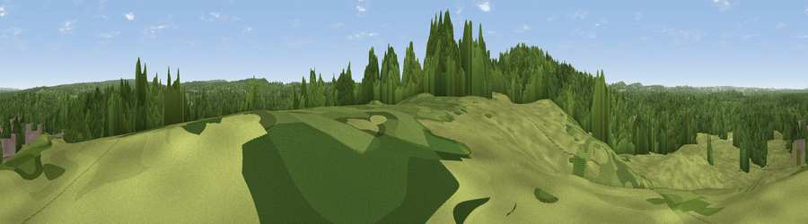

Viewpoint near Liphook
#38106 in England · top 65% of its area beats it · near LiphookThe view, rendered

A 360° render of this exact spot computed from the terrain model, tree cover and land cover — summer colours, afternoon light, calibrated against photographs of famous viewpoints. Real trees, hedges and buildings will differ in detail.
The panorama
Grey silhouette: terrain skyline in each direction (720 bearings, Earth curvature and refraction included). Dashed green: skyline with trees (+15 m) and buildings (+8 m) as obstacles. Blue strip: how far the ground is visible on each bearing.
Where the view opens
Wedge length = distance to the farthest visible ground on that bearing (vegetation-aware). Rings at 10, 25 and 50 km.
What fills the view
52% woodland · 40% grassland · 6% built-up · 2% cropland
Angular shares of the visible panorama (visual magnitude), not map area. Landscape diversity 0.43 (0–1 Shannon).
Key numbers
More beautiful places nearby
The staircase of upgrades: each row has a higher view potential than everything closer. Driving times are estimates from straight-line distance, calibrated against real road routing — check an actual route before setting out.
| Place | Direction | Drive | Score |
|---|---|---|---|
| Viewpoint near Liphook | SW · 1 km | ~2 min | 39.8 |
| Viewpoint near Milland | SSE · 3 km | ~7 min | 50.6 |
| Viewpoint near Milland | SSE · 3 km | ~7 min | 53.1 |
| Viewpoint near Liphook | SE · 4 km | ~9 min | 56.6 |
| Viewpoint near Lynchmere | ESE · 5 km | ~10 min | 62.2 |
| Noar Hill | W · 7 km | ~15 min | 62.3 |
| Viewpoint near Steep | WSW · 8 km | ~17 min | 68.7 |
| Viewpoint near Fernhurst | E · 10 km | ~20 min | 75.1 |
51.07272, -0.83275 · source: screening · position refined by local search. Computed location — check access rights before visiting.